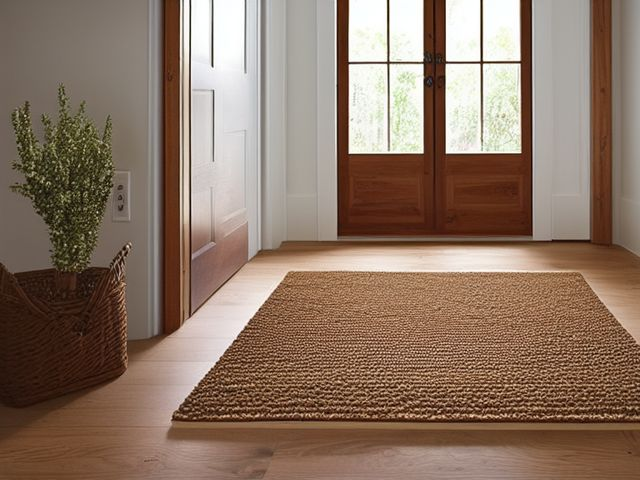

The Home Quest
One card. One job.
The deck, over your whole house. Six hundred and eighty four cards across 114 micro zones, drawn from the same method as the book. Do one, then put it down.
Free, and it stays free. No account, no email, nothing to install. Your progress is kept in this browser and is never sent anywhere.
Start here
Six small passes turn one messy spot into one you can trust.
We will start at your front door. It is the shortest zone in the house, and you will have finished something in about fifteen minutes.

Rather work off paper? Print the Entryway deck: the same six passes for the whole entryway, free, no email needed.
Your house
0 of 114 zones holding
Pick this up
Draw one card
A single job from anywhere in the house. The smallest possible start, and the one most likely to actually happen.
Work a room
Every zone in one room, in method order. Sort before Straighten, because rearranging what should have left is only moving it.
One S across a room
Take a single pass everywhere it applies, then stop. Good when you have energy for one kind of thinking and not six.
Uses the room chosen above.
You can stop when
That is a session
Every card you finish stays finished. Come back and the deck picks up where you left it, minus what you have already done.
If you want to go further
The app stays free either way, and it is the same 684 cards. The pack is for when you would rather carry them than hold a phone. If you would rather somebody ran the next one with you, a one hour video consult is $250 and you keep a written plan for the room: what a consult covers.
Every room
Where the house stands
Progress is kept in this browser and nowhere else. No account, and nothing is sent anywhere. Clearing your browser data clears it.
The sixth S
What you are keeping
A backup is a small file you keep. Restoring merges it with whatever is already here, so nothing you have done since is lost. Doing a zone again clears its six cards and puts it back in the deck.